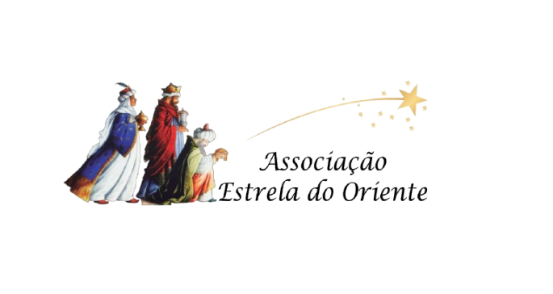
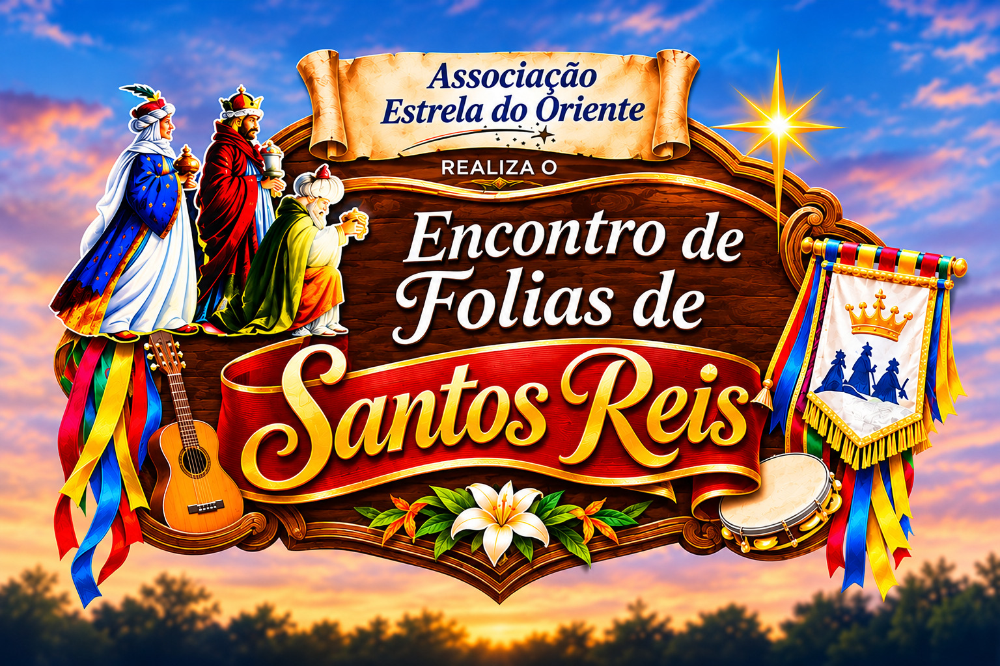
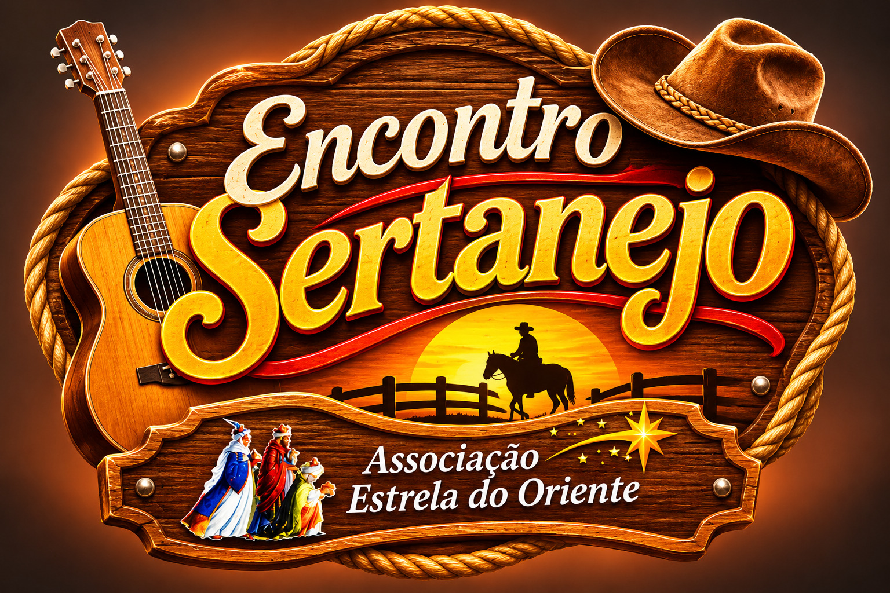

Há mais de 20 anos, a Associação Estrela do Oriente mantém viva a riqueza da cultura popular em Uberlândia e região. Por meio da Folia de Reis e das tradicionais Festas Juninas, celebramos a fé, os costumes e as manifestações que fazem parte da nossa identidade, preservando nossas raízes e transmitindo esse legado cultural às novas gerações.


Uma das principais manifestações culturais da Associação Estrela do Oriente, o encontro reúne mais de 30 Companhias de Folia de Santos Reis de diversas regiões do Brasil. Uma celebração de fé, devoção e cultura popular que preserva tradições transmitidas entre gerações.
Realizada pela Associação Estrela do Oriente, a Festa Junina reúne música, dança, comidas típicas e manifestações da cultura popular, proporcionando momentos de celebração e valorização das tradições juninas.

Com três edições realizadas, o Encontro Sertanejo celebra a música e os costumes do universo sertanejo, promovendo momentos de integração e valorização da cultura popular regional.
Com eventos voltados à música e à cultura sertaneja, a Associação Estrela do Oriente promove encontros que valorizam os costumes do campo, a música regional e a convivência comunitária.
Há mais de 20 anos, a Associação Estrela do Oriente promove e valoriza a cultura popular em Uberlândia e região. Sua trajetória é marcada pela realização do tradicional Encontro de Folias de Santos Reis, pela preservação das manifestações culturais e pela participação de jovens na continuidade dessa tradição.
Reconhecida como Ponto de Cultura pelo Ministério da Cultura, a Associação mantém vivo o patrimônio cultural e as raízes da nossa comunidade.